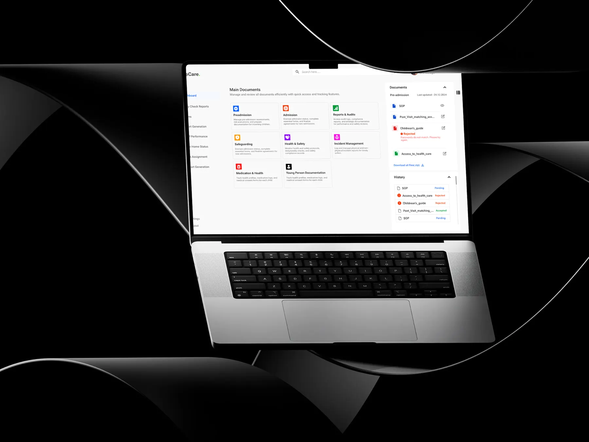
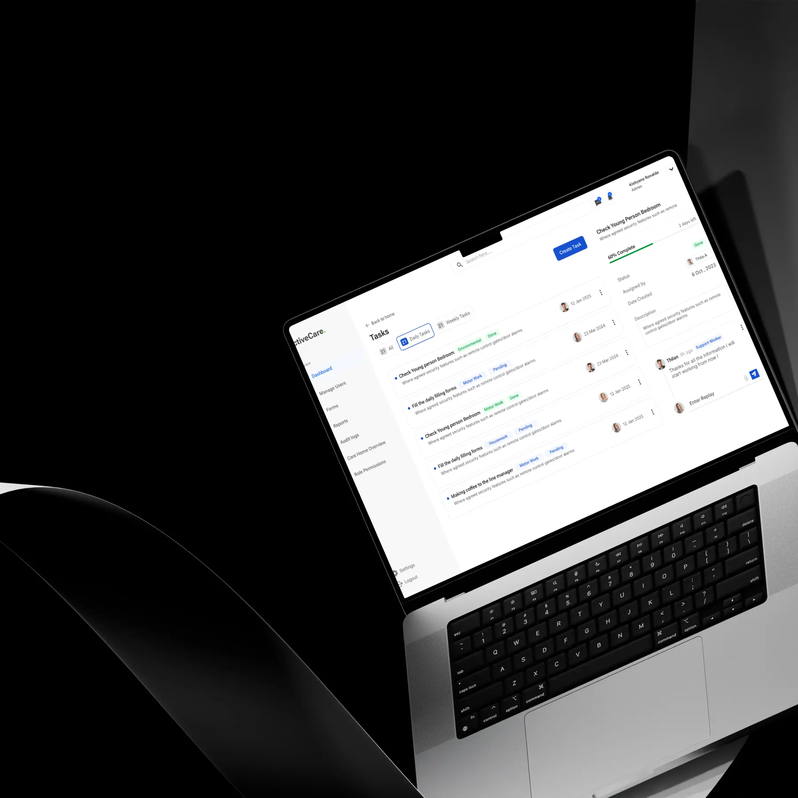
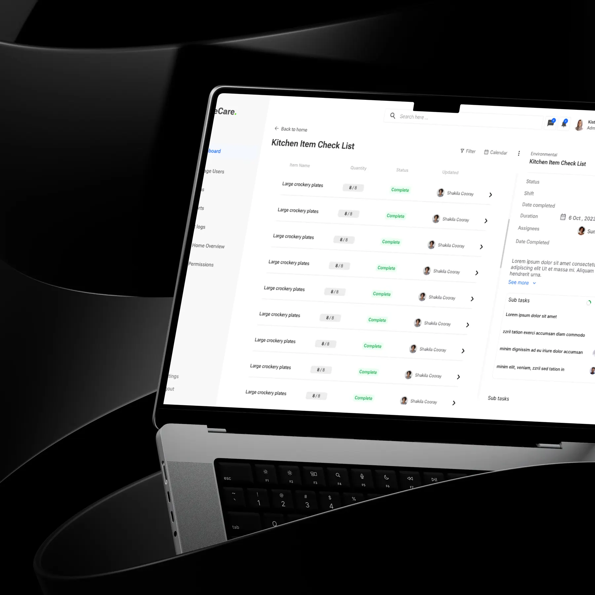
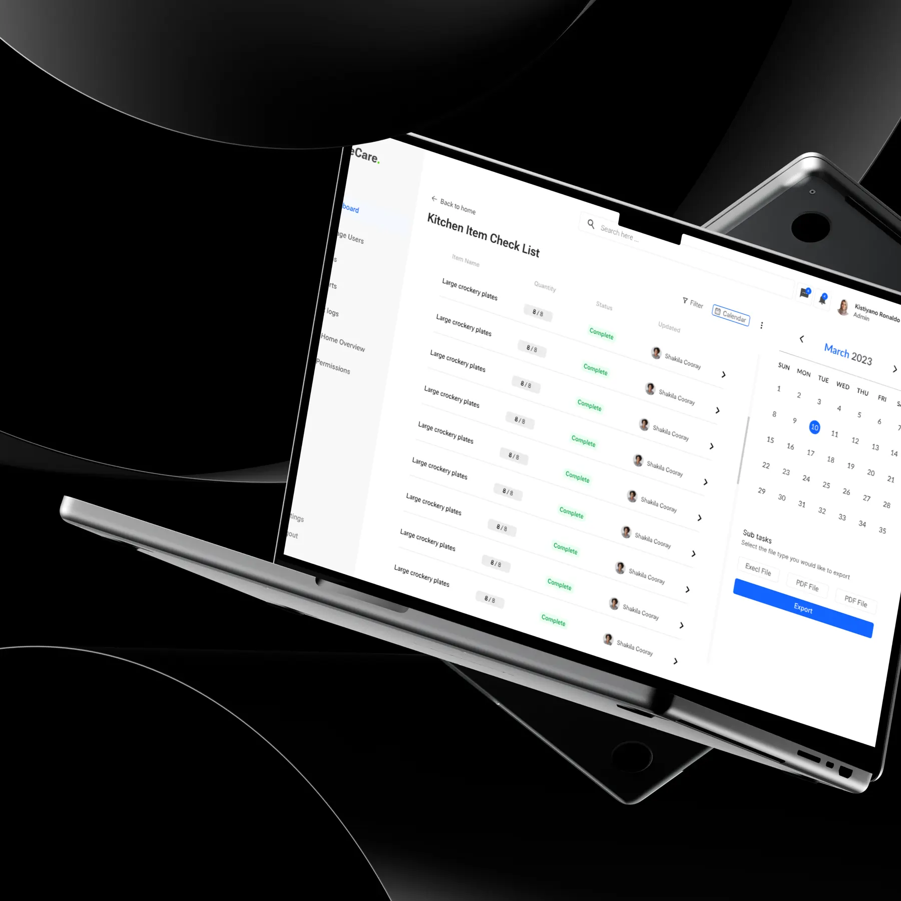

Active Care
care home system
The complete UI and UX for Active Care Organization — a UK-based care home management system for residents, caregivers, medication, compliance, incidents, scheduling and daily care documentation. The goal: a structured, accessible and efficient system for healthcare professionals in fast-paced, high-responsibility environments.

Challenge
Simplify complex, regulation-heavy workflows — without compromising critical functionality.
Active Care needed a centralised system to manage multiple care homes while staying compliant with UK healthcare regulations, supporting administrators, nurses, caregivers and managers.
Care staff make time-sensitive decisions under pressure, so the interface had to give fast access to resident data, medication schedules, incident reports and shift management tools.
- 01Designing for multiple user roles with different priorities
- 02Ensuring accessibility and readability in healthcare environments
- 03Reducing documentation fatigue in daily care logging
- 04Structuring large volumes of sensitive resident data clearly



Solution
A role-based, structured interface designed specifically for healthcare environments.
Key decisions included role-driven dashboards that highlight priority tasks, high-contrast typography for accessibility, and a modular design system for scalability.
I supported development by ensuring design components translated accurately into functional front-end elements. The result enhanced workflow efficiency, minimised errors in medication processes and created a more intuitive experience for all staff.
(Client’s feedback)
Sanjula Thilan transformed our complex care home workflows into a clean, intuitive, and highly efficient system that has significantly improved our daily operations.Al PatelDirector, Active Care Organization, UK